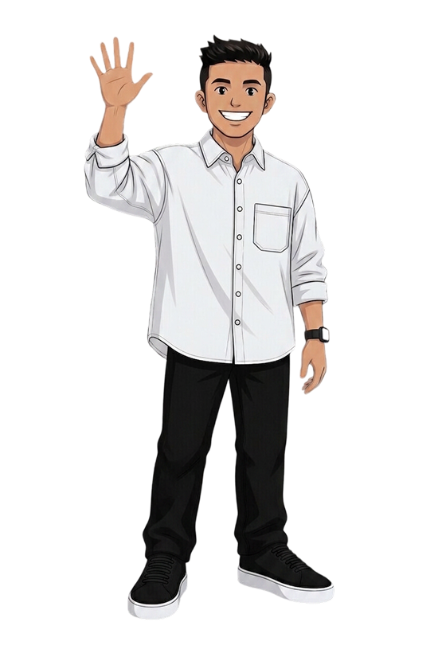

UX / UI Designer — Falkenberg, Sweden
Designing with purpose,
rooted in people.
I turn complex problems into clear, human digital experiences — grounded in research and ten years of working directly with people.

About
Crafting good digital experiences.
UX/UI designer with over ten years of experience in coaching, education and leadership. That background gave me a strong understanding of people's behaviors, needs and motivations — something I now bring into user-centered design.
Through my studies and internships I've gained hands-on experience in user research, prototyping, UI design and usability testing on real projects with real users. I'm especially motivated by turning insight into clear, practical design solutions.
Outside of work, life revolves around my family and functional fitness — 14 years of coaching and competing taught me structure, communication and how to break big goals into manageable steps. Skills I bring straight into every design process.
Selected work
“For me, great design is about making things feel clear, intuitive and genuinely human.”